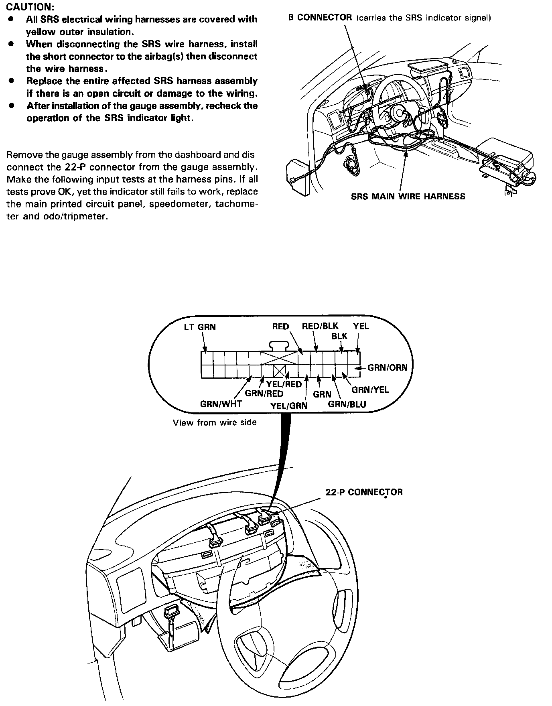
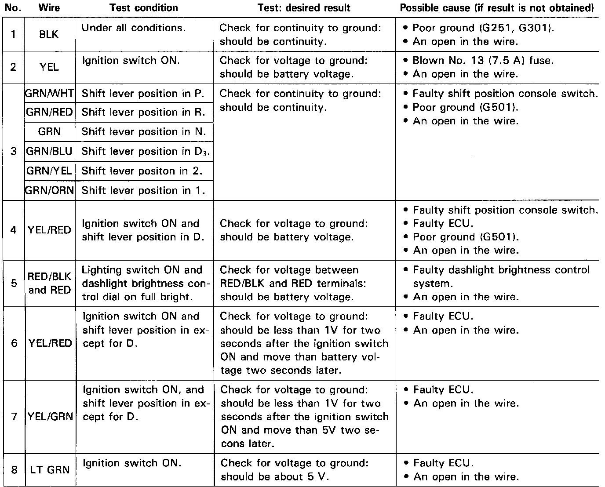

Operation CHARM
: Car repair manuals for everyone.
Home
>>
Acura
>>
1991
>>
Legend Coupe V6-3206cc 3.2L SOHC FI
>>
Repair and Diagnosis
>>
Instrument Panel, Gauges and Warning Indicators
>>
Transmission Shift Position Indicator Lamp
>>
Testing and Inspection
Transmission Shift Position Indicator Lamp: Testing and Inspection
Shift Lever Position Indicator


Indicator Input Test